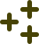

about.
Software Developer that is open to learn new technologies especially in web programming. Trying to improve JavaScript stack (Such as React.js, Next.js, Node.js). Working with the aim of improving his knowledge in these fields. Developing solutions that solve real users problems. I make projects and publish them on my Github page.
work.
I have 5 years of experience in JavaScript with 2.5 years of professional work experience including high-profile projects such as Hayat Finans, Amerikan Hastanesi, Yapı Kredi Kartopu, Tofaş(Fiat, Jeep, Alfa Romeo, Koç Fiat Kredi, Fiat Bireysel Kiralama, Opar), T-Life.
-
PortalGrup (September 2023 - June 2025)
- I contributed to the development of many high-profile websites which are used by thousands of users such as Hayat Finans, Amerikan Hastanesi, Yapı Kredi Kartopu.
- Demonstrated expertise in responsive web design, creating mobile-friendly user interfaces that provide seamless user experience across devices.
- Utilized Figma and Zeplin to create and implement responsive web designs.
- I gained strong experience working with iframes in Tofaş projects.
- I also contributed the development of website projects such as Dynavit, Avis, Budget, Alo Okey, Ödero, Fiat Kredi Online İşlemler, Token Flex, Otokoç.
- I mainly used HTML5, CSS3, SCSS, Vue.js, JavaScript, Next.js, JQuery, Bootstrap, Figma, Zeplin, Monday, Youtrack.
-
ID3 (October 2022 - September 2023)
- Daily tasks
- Improvements in frontend architecture (i.e. prettier, eslint and ts configs, updating redux store approach)
- Contribution to in-company projects
-
Human App:
This is a web-based application that the human resources department will use in the recruitment processes.
I developed user management module in this project.
I mainly used technologies such as React, Redux and TypeScript. -
T-Life:
Turkcell Life is an in-house mobile application used by Turkcell employees.
It consists of modules such as human resources, travel law, advantages world, and pool vehicles.
I contributed to the development of the pool vehicle module. I did the frontend and API integration.
I mainly used technologies such as React Native, Redux, and Redux-Saga.
-
Seorative (December 2021 - March 2022)
- General developments for both seorative.com.tr and seorative.co.uk sites.
- Installation of add-ons such as live chat, mail subscription system.
- Developing the design of the service pages.
- Page speed improvements for both sites.